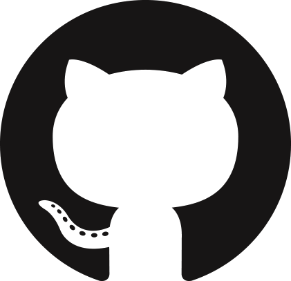
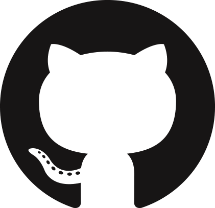

Etudiant à la Wild Code School. Futur développeur Web junior en PHP.
Réparation de smartphone et tablette. Accueil clientèle et management des techniciens.
Gestion de projet web pour le compte de client externe. Externalisation des développements.
Gestion d'un restaurant de type rapide pour la livraison de petit déjeuner
Gestion d'une entreprise de dépannage informatique à domicile. Partenariat avec Orange, Alice, Bouygues...
Apprentissage des langages de programation html, css, php et des framework Symfony et Bootstrap. Gestion de projet.
Obtention de plusieurs module mcp sur Windows server
Obtention du BAC Pro MRBT (Maintenance des Réseaux Bureautique et Télématique
Obtention du BEP Electronique